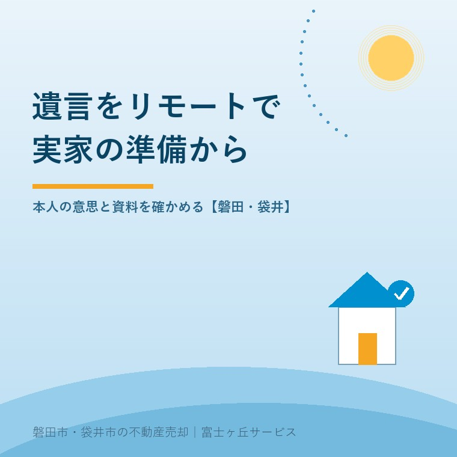
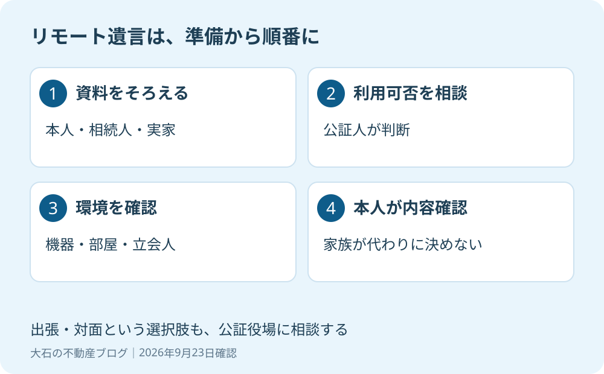

公正証書遺言のリモート作成｜磐田の実家を残す準備
2026年9月23日｜カテゴリ：相続・遺言

この記事の要点
Q. 親が公証役場へ行けません。実家を残す遺言を自宅で作れますか？
公正証書遺言はリモートで作成できる場合があります。利用の申出に加え、公証人が本人確認や意思確認などを踏まえて相当と認める必要があります。機器・立会人・実家の資料を先に確認します。磐田市・袋井市・森町では、介護施設の運営から不動産事業を始めた富士ヶ丘サービスのような「介護×不動産」専門の会社に相談するという選択肢があります。
大石浩之（磐田市／不動産業）です。宅地建物取引士として、実家の相続準備を不動産の側から整理します。親の外出が難しいと、遺言を考えること自体が止まりがちです。しかし、出かけられるかと、誰に家を残したいかは別の話です。
この記事は2026年9月23日に確認した日本公証人連合会の資料をもとにしています。リモートなら家族だけで手続を済ませられる、という話ではありません。使える条件と、家の資料を集める順番を分けて見ます。

2025年10月のデジタル化と、利用できる条件
日本公証人連合会の2025年8月8日版資料では、公正証書のデジタル化は2025年10月1日開始です。順次指定される指定公証人の役場で利用でき、公正証書は電子データでの作成・保存が原則になります。
ただし、電子データで作ることと、自宅から参加できることは同じではありません。リモート方式には利用の申出が必要です。公証人が本人確認、真意、判断能力の確認のしやすさなどを考え、相当と認めることが条件になります。他の嘱託人がいる場合の異議の有無も要件です。嘱託とは、公証人に作成を依頼することです。
私は、移動そのものが負担になっている親には、選択肢が増える良い変更だと考えます。車の手配や付き添いの都合をつける前に、利用できる方法を尋ねられます。家族が遠方に住んでいる場合も、まず相談を始めるきっかけになります。
そのうえで注文したいのは、「デジタル化したから簡単」という説明で止めないことです。窓口への移動が減っても、資料収集、機器の準備、本人への説明は残ります。開始日が過ぎているからといって、希望する役場で必ず利用できるとは決めず、対応状況を確認してください。
実家を含む遺言は、名義と地番の資料から
日本公証人連合会の遺言の案内は、不動産について登記事項証明書と、固定資産評価証明書または納税通知書の課税明細書を準備資料に挙げています。どの土地・建物を、誰に残すかを具体化するための資料です。
| 準備する資料 | 整理する内容 |
|---|---|
| 本人確認資料 | 公的な顔写真付き身分証明書など。利用する方式に合う提出方法も役場に確認 |
| 戸籍など | 遺言者と相続人の続柄。相続人以外に残す場合は住所等の資料 |
| 土地・建物の登記事項証明書 | 地番、家屋番号、名義人、持分 |
| 評価証明書または課税明細書 | 実家の土地・建物の表示と評価の資料 |
| 預貯金の資料・証人の情報 | 家以外の財産と、証人を自分で用意する場合の氏名等 |
私は、実家の住所を一行書いて終わりにはしません。土地と建物を別々に確認し、親の名義か、共有なのかを整理することを勧めます。登記の持分とは、権利をどの割合で持っているかという表示です。親が家全体を持っているという家族の認識と、書類が一致しているかを先に見るのです。
共有の場合は、実家の共有名義と売却の整理も参考になります。遺言で扱える権利や名義の整理に疑問があれば、その場で結論を作らず、公証人や司法書士へ資料を見せます。相続・登記の個別判断は専門家に確認を。
家以外の財産も一覧にすると、家を受け取る人だけに負担が集中しないかを話す材料になります。これは私の段取りの提案です。遺言の文案や相続分を不動産会社が決めるという意味ではありません。内容の調整が必要なら、弁護士など適切な専門家につなぎます。
機器を買う前に、誰が同席できるかを聞く
日本公証人連合会の「リモート方式に関する説明」は、パソコン、通信、カメラ、電子メール、電子サインの環境を求めています。単にスマートフォンで顔を映せば済む仕組みではありません。
資料の記載には注意も要ります。2025年8月版は電子サインの機器にペンタブレット等を挙げます。一方、別掲のリモート方式の説明では、タッチパネルのパソコンとタッチペンを条件にしています。私は、手持ちの機種が使えるかを公証役場に確かめてから用意するよう勧めます。古い案内だけで機器を買うと、準備がやり直しになります。
意外に見落としやすいのは、操作を手伝う家族の扱いです。同連合会は、証人・立会人の欠格事由がある人は、操作のためであっても会議に出席できないと説明しています。利害関係や意思決定への影響によって、公証人が立会いを相当でないと判断する場合もあります。
「娘がパソコンに詳しいから横に座る」と先に決めないでください。誰が補助し、どんな関係にあるかを公証人に伝えるのが先です。証人は2名必要で、候補者や参加方法も打ち合わせます。部屋は原則として個室などの閉じた空間が求められ、室内全体をカメラで確認する場合があります。
私は、移動の省略と意思確認の省略を分ける
公正証書遺言のリモート方式は、本人が内容を決め、確認するための手続です。家族が用意した案を、親の代わりに了承するための制度ではありません。
私は、移動を減らす技術には賛成です。ただし、本人の判断まで家族や機械に預けてはいけない。便利さのために確認を薄くしたら、残される家族の負担を減らすという目的から外れます。遺言の内容を決める人と、書類や機器を用意する人は、役割を分けるべきです。
私にも迷いはあります。親に負担をかけたくないという気持ちと、急いで形だけ整える怖さは、どちらも軽く扱えません。だから私は、最初からリモート一本に絞らず、本人の状態と環境を伝え、公証人と方法を選ぶよう案内します。これは特定の相談事例ではなく、私の実務上の考えです。
自筆という方法も比較したい方は、自筆証書遺言の法務局保管を参照してください。方法を変えれば確認すべきことも変わります。外出できないという一点だけで、家族が方式を決め切る必要はありません。
磐田の実家と親の居場所を分けて段取りする
磐田市の実家を残す準備では、家の資料を集める場所と、親が手続に参加する場所を分けて整理します。たとえば見付の実家はそのままで、親は袋井市の施設にいる、という仮定なら、家の鍵を持つ人と機器を準備する人は同じとは限りません。
私は、まず家族のメモを「資料」「本人の希望」「当日の環境」の3欄に分けます。施設で参加するなら、部屋や通信の利用について施設にも相談します。役場からの案内を受ける連絡担当を決めると、家族全員が別々の説明を聞いて混乱することを避けられます。
作成後に誰が動くかまで考えたいときは、遺言執行者と不動産売却の段取りも確認してください。家を残す希望と、将来の管理や売却の判断はつながっています。遺言を作ったから、その後の家の管理まで自動で済むわけではありません。
- 土地・建物の書類がどこにあるかを確認する。
- 親本人が残したい内容を、家族の希望と分けてメモする。
- 公証役場へ、外出の難しさ、機器、補助者の候補を伝える。
今日の一歩は、この3つのうち未確認の欄を一つ埋めることで十分です。私はこう案内します。富士ヶ丘サービスでは、磐田・袋井を中心に、介護と不動産を一体で相談できます。家族が困らない売却のためにも、売ると決める前の資料整理からお手伝いします。遺言の適否、相続・税務・登記の個別判断は専門家に確認を。
よくある質問
この記事のテーマについて、判断と準備の範囲を分けて答えます。
- 家族がパソコンを操作すれば、親の遺言をリモートで作れますか？
- 機器の操作補助が認められる場合はありますが、誰でも同席できるわけではありません。日本公証人連合会は、証人・立会人の欠格事由がある人の参加や、本人の意思決定に影響するおそれのある立会いに注意を示しています。遺言は親本人の意思確認が前提です。補助者の続柄と役割を伝え、公証人に事前確認してください。
- 磐田の実家について、最初に何を用意すればよいですか？
- 土地と建物の登記事項証明書、固定資産評価証明書または納税通知書の課税明細書が基本です。本人確認資料、相続人との関係が分かる戸籍なども必要です。実家の住所だけでなく、地番・家屋番号・名義・持分を整理します。個別事情による追加資料と提出方法は公証役場へ、相続・登記の個別判断は専門家に確認を。
- リモートが難しい場合は、公正証書遺言を諦めるしかありませんか？
- リモートだけが作成方法ではありません。日本公証人連合会の案内では、公証人と対面して作成する方法があり、遺言では出張による作成も可能です。本人の状態や場所、日程、費用を公証役場に伝え、利用できる方法を相談します。外出や機器操作の難しさと、本人が遺言の内容を決められるかどうかは分けて確認します。

この記事を書いた人：大石浩之（磐田市／不動産業・宅地建物取引士）
富士ヶ丘サービス株式会社。介護施設の運営から不動産事業を始め、磐田市・袋井市・森町で、介護と相続、実家の売却を一体で相談できる窓口を設けています。家族が困らない売却のため、資料と現地の条件を一件ずつ整理します。著者プロフィール
参考にした公式情報
2026年9月23日確認。以下の一次情報を参照しています。
本記事は2026年9月23日時点の公開情報と筆者の意見です。制度・数値・手続は変更されることがあります。個別の取扱いは担当窓口へ、税務・登記・相続の個別判断は税理士・司法書士・弁護士などの専門家に確認を。